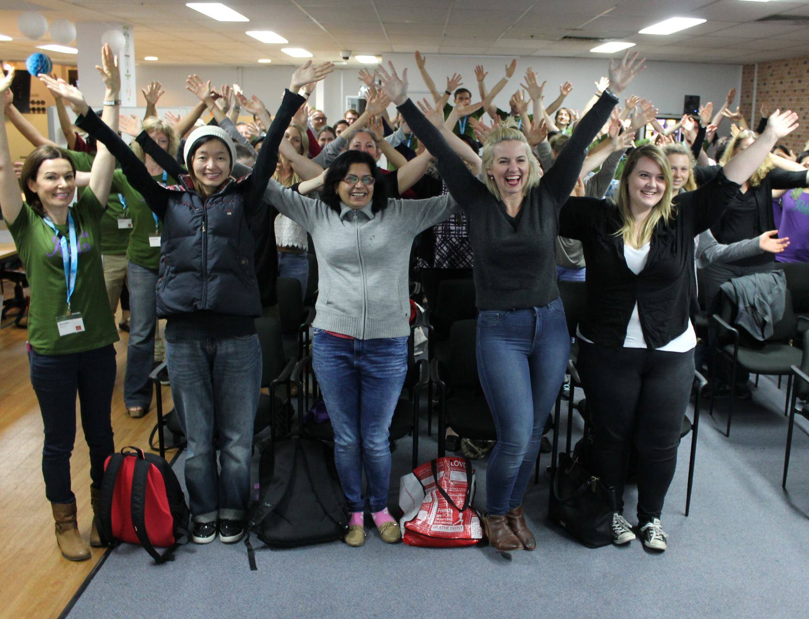

Follow @railsgirlsbne Follow @sabel25 Follow @RachelleOnRails
Rails Girls 2016 has ended and wow what a weekend it was. We had fantastic sponsors, mentors, food, coffee, venue and possibly most of all amazing participants.
As always we built and deployed a web app as part of the Rails Girls Beginners track. This year we also ran a Rails Girls Next track which focused on exposing the magic of rails. To demonstrate this we built a sinatra app from the ground up!
We had many presentations and talks all focused on the theme of demystifying Rails magic and we updated our user guides, making them even more user friendly than the previous ones.
Feeback so far has been really positive.
Thanks again for coming and we hope to see you all again soon :)

Hi and welcome to the Rails Girls BNE blog
Rails Girls is an international community dedicated to introducing women to software development in a safe and inclusive environment. We run a workshop in Brisbane biannually. It takes place over two days - Friday evening and a full day workshop on Saturday. We have mentors from the Rails community, as well as other people interested in supporting the event who bring a range of skills. We have recently added a second track (Rails Girls Next) for the not so beginners attendees.
Some of our attendees go on to pursue programming full time - they've also come back to mentor others which perpetuates the inclusive nature of the event and the growth of the community. It's an amazing community that fosters learning and empowers the attendees.
We have had six Rails Girls events in Brisbane since June 2013, and we're keen to keep them going.
Our blog has been developed to complement the learnings at the Rails Girls workshops. We currently focus on Ruby tips, Rails stuff, Sinatra, and everything in-between. We want lots of comments and feedback so we can continue to blog about things you want to hear about.